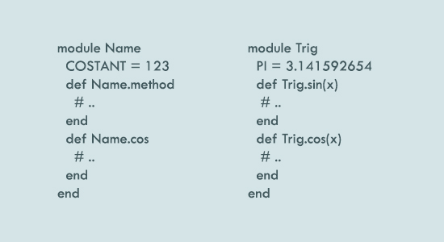
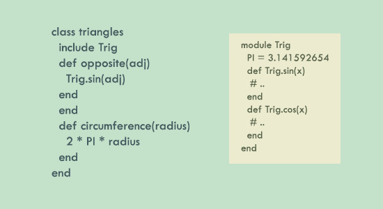

2014. 10. 25
I've discusses about Ruby Classes on the last blog posting. Classes can be instantiated and is for object creation. It consists of methods, constants, methods, constants, and variables. Ruby Class's inheritance hierarchy of Class < Module < Object < BasicObject. This can be said that class is a subclass of "Module" which is a subclass of "Object."
Unlike classes, modules cannot be instantiated and groups methods, constants, and also classes. The benefits of using modules are providing namespace which prevents name clashes and implmenting the mixin facility.

Name.cos or Trig.cos just as method calling for classes. To use constants defined in modules, we use double colons "::" such as Trig::PI.

Just by using "include module" in a class definition, we can use the included module's methods and constants.